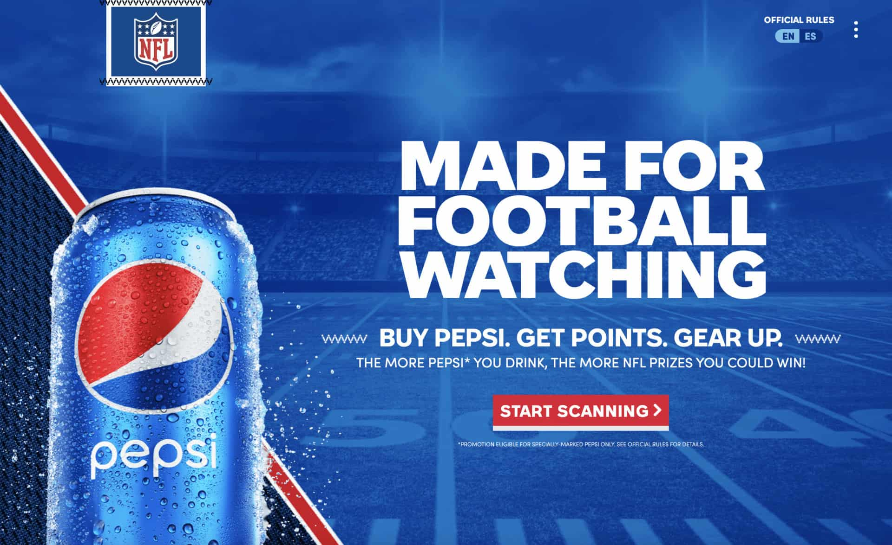

Have you ever wondered how some brands manage to dominate the search engine rankings, while
others struggle to even make it to the first page? The secret lies in their search engine optimization
(SEO) strategies.
In today’s digital age, having a strong online presence is essential for businesses to succeed.
SEO is a
crucial component of that online presence. It helps businesses improve their visibility and attract more
organic traffic to their website.
The best way to learn about
effective SEO strategies" is by looking at successful examples from top
brands.
SEO
SEO stands for Search Engine Optimization, which is the process of optimizing a website’s content
and structure to increase its visibility and ranking in search engine results pages (SERPs).
15 Best SEO Examples and
Lessons for Marketers
1. Etsy
SEO stands for Search Engine Optimization, which is the process of optimizing a website’s content
and structure to increase its visibility and ranking in search engine results pages (SERPs).
Creating an effective content strategy is crucial for attracting targeted organic visitors to e-commerce
websites. Etsy, a leading global marketplace for handcrafted products, is a prime example of how a
robust content strategy can drive customer engagement and retention.
Etsy’s content strategy is centred around inspiring stories about its merchants and the unique products
they offer. It’s not just about SEO but also about fostering a community that loves the shopping site
and keeps coming back for more. Content marketers often cover Etsy, and a search for “Etsy content
strategy” yields numerous results.
One of the key reasons why Etsy’s content strategy works so well is its emphasis on user-generated
content. They feature the work of their merchants and highlight the stories behind their products. By
shining a spotlight on its users, Etsy creates a sense of community and fosters brand loyalty.
Additionally, they use enticing hooks to guide viewers to deeper pages, resulting in increased
engagement and higher customer retention rates.
Etsy’s content strategy is a prime example of how effective content can drive engagement and
retention in e-commerce websites. If you want to improve your website’s SEO and customer
engagement, consider taking a page from Etsy’s playbook.
2. Rei
When it comes to e-commerce websites, fast load times are critical for driving sales. One of the
biggest factors that can slow down a site is the use of excessive imagery.
However, there are ways to strike a balance between high-quality product photos and fast load times.
Rei, an outdoor gear brand, is an excellent example of a website that has achieved this balance.
Rei’s website has a remarkably fast load time of just 1.07 seconds, which is a significant achievement
in the e-commerce world. According to research, 47% of users expect a page to load within one or two
seconds, and anything longer can cause them to click away.

By keeping their load time so low, Rei has ensured that potential customers can quickly and easily
access their products and make purchases
Having a fast-loading website is not only important for user experience, but it is also a crucial factor
in SEO strategy. Google takes website load time into account when determining search engine
rankings, so a fast site can help to boost your ROI.
Rei’s success in this area makes them an excellent example for other e-commerce brands to follow.
Nike
Nike website is a prime example of how the use of buzzwords can impact SEO. The moment you
land on their homepage, you’re greeted with terms like “must-have,” “trending,” and “new releases,”
creating an atmosphere of excitement and anticipation.
Not only are these phrases used throughout the site, but they are accompanied by photos that further
pique your interest in the brand’s offerings.
This strategy works wonders in terms of engaging visitors and making them curious about the
products. Even if you’re not in the fashion industry, there’s a lesson to be learned from Nike’s SEO
tactics. Find the most relevant and popular keywords in your niche and integrate them into your
website’s content, particularly the homepage.
Another crucial aspect of Nike’s website is its user experience. The site is designed with the customer
in mind, with easy navigation and well-organized categories to help shoppers find what they need
quickly. This, coupled with high-quality product images and detailed descriptions, creates a seamless
shopping experience.
Nike’s SEO strategy is successful because it uses targeted keywords to create buzz around its products
while ensuring a smooth customer experience. By following their lead, you too can improve your SEO
and attract more visitors to your website.
4. Looka
Looka is a company that uses AI to create logos and brands for its customers. Using Looka’s service,
customers can choose their preferred colours, typefaces, and designs, and the program will take care
of the rest.
One of the most attractive features of Looka’s service is that customers can start the process for free
and see what kinds of ideas the program generates before committing any money. This is particularly
appealing to many business owners who are hesitant to invest in professional branding.
.webp)
What’s even more impressive about Looka is their clever SEO strategy. The company made its tool
initially free, which made it highly linkable. This means media outlets and bloggers could share it with
their audiences without worrying about complaints regarding the price.
Unsurprisingly, this strategy has significantly improved Looka’s backlink profile.
Having reputable websites link to your company is crucial in SEO because Google sees it as a vote of
confidence in your credibility and reliability. The more high-quality links your website receives,
the higher it will rank.
Looka’s approach is a great SEO example and illustrates how a simple strategy can go a long way in
improving your backlink profile.
5. Pepsi
Pepsi has long been recognized for its exceptional brand development skills. One of their website’s
most prominent features is the use of H₁ and H₃ tags to create a sense of celebration and association
with pleasant moments when consuming a Pepsi beverage.
This is a powerful SEO tactic that can help boost rankings and attract potential customers who search
for related terms.
For instance, their H₃ tag reads “the official soft drink of the National Football League,” a phrase that
aims to attract both Google users searching for “soft drink” and those searching for “national football
league.” The strategic use of keywords and the play on words in these tags is an excellent example of
effective SEO.

As a business owner, it’s essential to understand what your target audience is searching for and how to
incorporate those terms into your website’s content. This can significantly improve your website’s
visibility and attract more potential customers to your brand.
Take a page out of Pepsi’s book and experiment with different keywords and phrases to create
a compelling website that resonates with your audience.
6. Amazon
Amazon is renowned for its excellence in e-commerce SEO. One of the ways it excels is through the
use of user-generated content, typically in the form of reviews and ratings.
These social signals offer consumers a valuable resource for making more informed purchasing
decisions. On an SEO level, user comments on retail sites provide fresh content that describes the
product, a crucial element for any e-commerce website.

Amazon’s use of user-generated content is unrivalled. It’s not uncommon to find products
with hundreds, if not thousands, of reviews.
In addition to providing valuable information to consumers, this wealth of content also provides
significant benefits to Amazon’s SEO efforts. Fresh content is vital to any website’s SEO strategy, and
the sheer volume of reviews on Amazon makes it a clear leader in this area.
Amazon’s success in e-commerce SEO is not by accident. Their innovative approach to utilizing user
-generated content has paid off immensely. For businesses looking to improve their SEO efforts, taking
cues from Amazon’s approach could provide significant benefits.
By prioritizing user-generated content, businesses can provide valuable resources for consumers and
improve their SEO at the same time.
7. Gymshark
GymGymshark, a fitness clothing brand, is a remarkable SEO example, mainly because of its
comprehensive backlink profile and outstanding social proof, which is majorly generated through
social media.
In addition to launching their brand, Gymshark has also started a frequently-updated blog that
discusses trending topics and answers the questions their customers are asking. This content
marketing effort has significantly helped their website traffic to skyrocket.
Their backlink profile is essential in ranking well in search engines. It shows Google that many
reputable websites are linking to them, indicating that their website is of high-quality and
trustworthiness.
By using social media, they have established a brand image that resonates with their target
audience, which boosts their social proof. Moreover, they have done an excellent job of
integrating their social media presence into their website.
Their blog has helped them to rank well for several relevant keywords. By creating fresh,
engaging, and informative content that caters to their customer’s needs, they can attract more
organic traffic to their site.
As a result, they can showcase their brand, products, and services to a broader audience,
leading to increased sales and revenue.
Gymshark is a good SEO website example that shows how a strong backlink profile,
outstanding social proof, and an effective content marketing strategy can help to
drive traffic to a website.
8. Woot
Great site architecture can have a significant impact on your site’s usability and rankings. Not
only will users be able to find your products easily, but with the help of internal links, you’ll
provide search engines with a logical path from your home page to your product pages.
Also, the keywords you use as anchors will help you rank higher in search results.
Woot is a deal site that provides an excellent example of well-thought-out site architecture.
They have categorized and organized their products by type, making it easy for users to
find what they are looking for. Additionally, they have implemented breadcrumbs, which allow
users to navigate between different content levels.
In line with the best usability practices, all products on Woot can be accessed within just 2 or 3
clicks from the home page. This approach presents all the content in a manner that is user-
friendly and optimized for search engines.
9. Macy’s
When it comes to large ecommerce sites, it’s not uncommon for products to be accessible
through multiple paths. Macy’s is a good example of this.
For instance, you can navigate to their clothing section in many ways, including by clicking on
the “Women” or “Men” tabs on the main menu, or by selecting a category like “Dresses” or
“Suits & Suit Separates” on the left-hand sidebar.
This kind of flexibility in navigation makes it easier for users to find what they’re looking for,
regardless of how they approach the site. It also benefits SEO, as it allows search engines to
crawl and index the site more thoroughly, increasing the chances of your product pages being
discovered by users.
10. Overstock
Using structured data, such as schema.org and RDFa, is crucial for ecommerce SEO as it
enables site owners to provide precise information to search engines. This information can then
be displayed in search results as rich snippets, including details like
ratings, prices, and availability
Overstockis an ecommerce site that effectively uses structured data, which helps it stand out in
both organic and shopping results. By utilizing structured data, Overstock provides accurate
product information to search engines, allowing them to create rich snippets that are more
informative for users.
By implementing structured data effectively, ecommerce sites like Overstock can provide
search engines with more accurate information about their products, leading to better search
engine rankings and more informed consumers.
11. Luna Sandals
Product descriptions are a crucial aspect of ecommerce SEO, yet they are often overlooked.
They are one of the simplest things to get right for an ecommerce site’s SEO.
Even if your site sells other people’s products, it is important to avoid copying and pasting the
manufacturer’s description. Instead, create a unique and detailed product description that will
make your site more relevant for the products you sell and the related keywords you target.
One great example of a brand that understands the importance of product descriptions is
Luna
Sandals, a minimalist footwear brand. Each of their footwear items includes a unique and
inspiring description of over 500 words.
This attention to detail sets them apart and makes their website more engaging and informative
for their customers.
12. Hasbrook & Hasbrook nails local SEO
Hasbrook & Hasbrook is a personal injury law firm based in
Oklahoma City that excels in local SEO. Local SEO is crucial for businesses with physical locations or primarily serving
customers in a specific area. To appear on search engine results pages (SERPs) for people
searching for businesses similar to yours in the area, you need to work for it.
Hasbrook & Hasbrook does an excellent job of making its location clear. The firm has its
location in most of its webpage titles, and a lot of its content is inspired by laws relevant to local citizens. Even its
website URL has “Oklahoma” in it.
While this might seem simple, it has a huge impact on a business’s search engine rankings. The
law firm currently ranks on the first page of Google for Oklahoma keywords with a collective
monthly search volume of 9,130. This means there are many people interested in the services
Hasbrook & Hasbrook provides, and they’re likely to discover the company during their
research.
If your business has physical locations or serves many customers in a specific area,
creating your local SEO strategy is essential.
You can start by optimizing your Google My Business listing, incorporating your location into
your website copy, and creating content that appeals to locals. Following these tips can
significantly increase your foot traffic.
13. Venngage
Venngage, a company specializing in infographic design, has gained a strong presence on the
SERPs through its high-quality content.
The creation of content should be a significant part of any SEO strategy as it provides search
engines with more information about your business and enables you to showcase your
expertise to potential customers.
One of Venngage’s high-ranking pieces of content is their guide titled “What is an infographic?”
which appears at the top of Google search results for a wide range of relevant keywords. This guide
has helped Venngage rank for terms such as “infographics,” “infographic examples,” and “infographic
definition” with a monthly search volume of 84,079, 7,977, and 1,548 respectively according to Moz
Keyword Explorer.
While individuals who first come across this content may not require Venngage’s services
immediately, the guide provides an opportunity for Venngage to establish a relationship with potential
clients who are interested in incorporating infographics into their content. This relationship could lead
to future business opportunities.
To determine what kind of content your target audience is looking for, you can listen to client queries
and conduct keyword research. Social Marketing Writing also provides a guide on evergreen vs.
topical content to help you identify relevant topics to cover.
14. Beauty Bay
Beauty Bay has mastered SEO marketing and stands out in the highly competitive beauty industry.
Through clever celebrity partnerships, such as with Jade Thirlwall from Little Mix, they have garnered
attention and driven significant traffic to their website.
Their content marketing strategy involves curating content from small content creators and influencers
on Instagram to create resources that those creators are likely to link and share, further boosting
the visibility of the content and the brand.
This approach not only helps to create a diverse range of content but also establishes strong
relationships with influencers, which can lead to increased brand loyalty and trust.
By focusing on creating engaging content and leveraging partnerships with influential figures, Beauty
Bay has established a strong online presence and secured high rankings for competitive keywords.
For businesses in the beauty industry looking to improve their SEO, Beauty Bay serves as a great
example of effective strategies to consider.
15. The INKEY List
The INKEY List is a prime example of effective SEO within the beauty and cosmetics industry. Their
website collects customer data based on demographics such as age range and skin type to present
customized product recommendations to visitors.
Additionally, they utilize SEO-optimized reviews that Google indexes for relevant long-tail keywords.
For example, a review for “excellent quality sun cream” would be indexed by Google, which helps the
brand attract relevant traffic within its niche.
By implementing these tactics, The INKEY List has been able to improve their visibility and drive
traffic to their site. This is especially important in a competitive industry such as
beauty and cosmetics.
By tailoring their content and product recommendations to specific demographics and utilizing SEO-
optimized reviews, they can attract and retain customers. .
Grow with SEO
These brands serve as excellent examples of how effective SEO strategies can help businesses achieve
greater visibility, attract more relevant traffic, and ultimately drive conversions.
By focusing on elements such as high-quality content, local
SEO service, unique product descriptions,
and tailored customer experiences, these brands have managed to rank well in competitive search
results and stay ahead of the curve in their respective industries.
At The Brand Shop, we understand the importance of a strong SEO strategy in building a successful
brand. That’s why we offer
comprehensive SEO services to help our clients optimize their online
presence and reach their target audience.
Don’t let your brand get left behind in the digital age. Contact us today to learn more about
our SEO
services and how we can help your business achieve greater success online.
Our Office
No.8, Pumpkin Patch,
Newtown, Maun, Botswana
Contact us
Call or WhatsApp
+250 790433388
Copyright © 2024 The Brand Shop All Rights Reserved